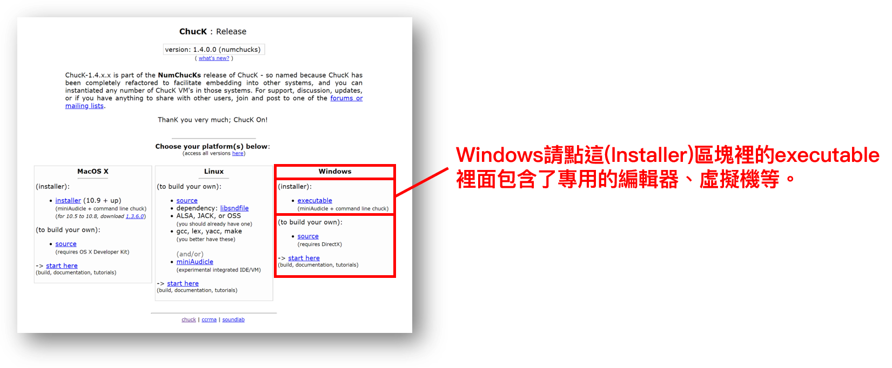
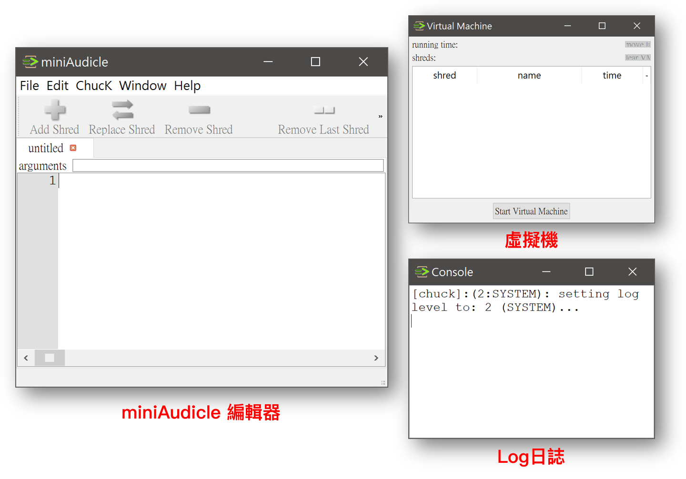
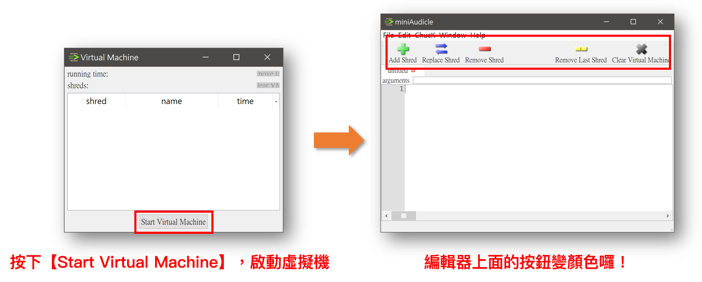
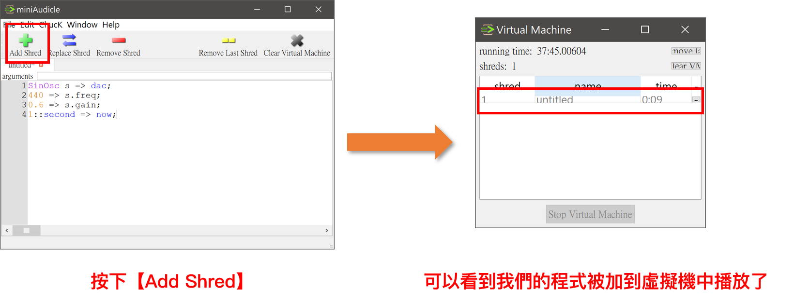
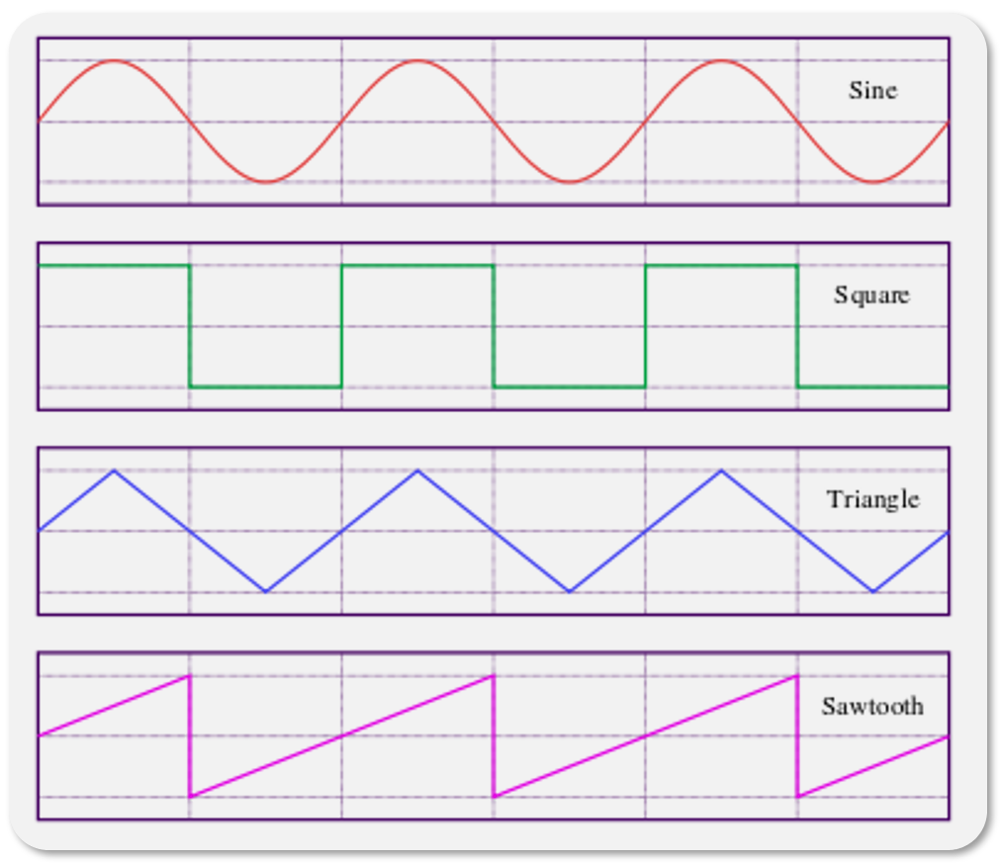
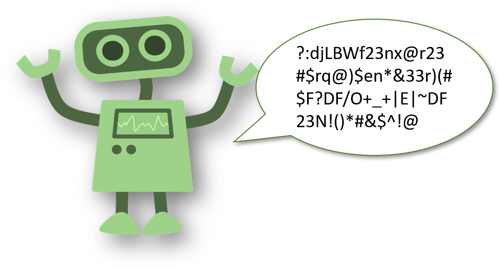

ChucK - 創造機器人聲
ChucK是一個用程式碼表達音樂的程式語言，因為支持Linux,Windows和MacOS X等大型作業系統而廣受歡迎。
ChucK的語法格式與C++類似，如if條件、迴圈控制、函數、類別等都非常類是於C++。
但也有一些細微區別，最大的區別在於【=>】(等於+大於)符號，這是在ChucK中用得特別多的符號。
它被用來做變數覆值：
C++語法的變數覆值
int i = 0;
ChucK語法的變數覆值
0 => int i;
這裡我們將示範如何讓音樂與DAC(數位類比轉換器)做連結，進而從喇叭中播放聲音。
也會示範各種頻率、波形、震幅對聲音的影響。
🗒️安裝ChucK
官方安裝網站：http://chuck.cs.princeton.edu/release/
備用下載連結：https://goo.gl/uNC9H9
請大家依照你的作業系統選擇安裝的版本。

下載完成後會得到一個【chuck-1.4.0.0.msi】，點擊後開始安裝。
🗒️開啟ChucK
在電腦中找到Chuck，打開名字叫做【miniAudicle】的編輯器。
啟動後會同時打開三個視窗：編輯器(寫程式的地方)、虛擬機(可以同時處理很多聲道)、Log日誌(操作的過程)

首先打開虛擬機，請按下【Start Virtual Machine】。可以發現編輯器上面的按鈕變顏色囉！

🗒️編輯ChucK
打開【miniAudicle編輯器】，輸入以下程式碼，按下【Add Shred】將這段聲音加入虛擬機運行。
SinOsc s => dac;
440 => s.freq;
0.6 => s.gain;
1::second => now;

這段程式碼做了哪些事讓電腦發出聲音呢？我們一行一行來解析：
1.
SinOsc s => dac;
開一個新的sine波，名叫 【s】，放到dac (digital-audio converter)即是傳送到喇叭發聲。
2.
440 => s.freq;
設定波的【頻率frequency】，我們把頻率設定成440hz，也就是我們的A4(La音)。
3.
0.6 => s.gain;
設定波的震幅，gain的意思是增強，0.6表示為原本預設的0.6倍。
4.
1::second => now;
設定播放時間為1，單位定義為second(秒)。
🤔想想看
我們透過【Oscillator電子振盪器】來產生具有周期性的類比訊號(高電為低電位的轉換)。
而電子震盪器並不只有能產生sine波，同時還有Triangle波、Square波和SawTooth波等。

根據我們上一章的說明，波形會影響聲音的音色。
意思就是，我把一把小提琴和一隻單簧管的頻率設定成440hz，振幅也相同，但在我們人耳中聽起來還是不一樣。
現在請大家將第一行的Sine波
SinOsc s => dac;
依序改成不同的波形，聽聽看聲音發生了什麼變化？
Square波
SqrOsc s => dac;
Triangle波
TriOsc s3 => dac;
SawTooth波
SawOsc s4 => dac;
🗒️機器人聲
在早期的電影中，機器人的聲音就是利用這些波的特性疊加融合而來的。
它們會刻意讓高頻音、低頻音頻繁的交錯，創造出模仿人類說話的抑揚頓挫。

這次我們使用一個無窮的While迴圈，
在每次運作時都隨機亂數一個20hz～1500hz的頻率指定給我們的波，
最後每個聲音都只維持0.125秒。
SinOsc s => dac;
0.6 => s.gain;
while(true)
{
Math.random2f(20,1500) => s.freq;
0.125::second => now;
}
🗒️墜落的聲音
從高處墜落的聲音，其實就是讓聲音從高頻率一直降到到低頻率。
SinOsc s => dac;
3000.0 => float fall;
3000 => s.freq;
while(fall > 0)
{
10 -=> fall;
fall => s.freq;
0.01::second => now;
}
🗒️雷射槍的聲音
讓墜落的聲音加快個100倍。
並且改用Square波。
SqrOsc s => dac;
20000.0 => float fall;
20000 => s.freq;
while(fall > 0)
{
20 -=> fall;
fall => s.freq;
0.0001::second => now;
}